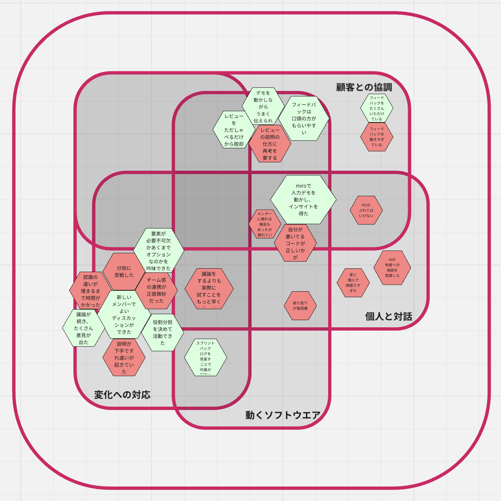

enPiT2025の話(2026.02.11)
昨年夏ごろから参加していたenPiTの参加記録です！この記事では特に秋学期のことについて書いています。
enPiTについてはこちら→https://enpit.coins.tsukuba.ac.jp
そもそも（私自身について）
私はこれまでチームでの開発経験がないどころか、個人でもソフトウェアやアプリケーションを開発したことがありませんでした。
そのため今回のenPiTでは技術面でのハンデ（マイナス方向）を、アイデア出しやデザイン、レビューの仕方やプレゼンの仕方の提案といった面でカバーできるよう頑張りました。
（もちろん技術面でもAI等を有効活用してチームに貢献できるように全力を尽くしましたし、ReactやCSS Modulesのいい勉強になりました）
作ったプロダクトの紹介
夏の集中講義では「チーム持ち物」で持ち物リストアプリ
を開発したのですが、秋学期からは「君の名は」チームに加入し開発に取り組みました。
開発したプロダクトはキミのヒント
というプロフィール帳とクイズの機能を兼ね備えたアプリです。
初対面の数人で自己紹介するという状況での使用を想定しており、「せっかく話が弾んでも名前が覚えられないから次に会った時に話しかけることができない」という悩みを解消することが目的です。
使い方
※アプリ画面のスクショ等をめんどくさがって貼らなかったのでもしよければアプリを開きながら読んでください
まず初めに、プロフィールを作成します。名前や学部等の情報に加えて趣味や好きなアーティストに関する入力欄もあり、それらと関連づけることで「〇〇が趣味の△△さん」というように名前が覚えやすくなるはずです。また、「自分と好きなアーティストが同じ人がいた」というように、その後の会話や交流につながるかもしれません。
プロフィールを作った後は、数人でグループを作成し、クイズに挑戦します。先ほど入力したプロフィールがもとになっており、名前に関するクイズは2問あります。難易度が違うので覚えたつもり。では終わらせません。自分が出題者の時は少し関連エピソードを話してみるのもありです。
全員分のクイズを解き終わった後はプロフィールが自動で交換されます。後からプロフィール一覧ページで見返すことができるので、「あの人の名前なんだっけ」となっても大丈夫！プロフィールを交換するだけならqrコードで行うこともできます。
アピールポイント
「キミのヒント」は自己紹介の代替手段であるプロダクトです。
とりあえず名前や学部について話すだけの自己紹介ではもったいない！「クイズ」というスタイルを取り入れることで、楽しみながら、みんなでわいわいしながらお互いについて知り、名前も覚えられる。それがこのプロダクトの強みです。
開発についての振り返り
ロングレビュー1まで
まず夏学期のチームが解散してしまったので移籍先を探しました。夏学期から人数が減ってしまった＆作りたいプロダクトの内容に共感した「君の名は」に参加を決めました。
私以外にも秋学期から参加のメンバーがいたこともあり、スプリント1では「何を作りたいかの共有」がメインでした。アプリの使用想定場面について考えたり、作りたいプロダクトをコードを書かずにmiro上で再現し、実際に使ってみたり…
他チームがどんどん開発を進める中、ディスカッションばかりをしていて大丈夫か？と焦ることもありましたが、あのとき認識の齟齬をできるだけ無くしておいたことが後々の開発をスムーズに進めることにつながりました。
ロングレビュー2まで
スプリント2のゴールは「ユーザー体験の拡張」でした。夏学期メンバーの開発してくれたものは、プロフィールやクイズの内容がすでに定められたもの（ハリボテ）だったため、実際にユーザーが使える機能を実装していきました。
しかし、毎回授業の最後にレビューをもらう→それを次回実装→またレビューをもらう、という流れを繰り返してしまい、レビューで指摘されたものをただひたすら実装していくだけになってしまいました。
そこでチームメンバーで実装したい機能を書き出し、優先順位を決めて開発を進めていくことにしました。タスク管理はmiroにあったスプリントバックログのテンプレを活用しました。本来想定されていた使い方とは違うかもしれませんがそれは気にしないでください（笑）
ロングレビュー3まで
この時期はバックエンドを実装し、実際に他人とプロフィールを交換したり、他人のクイズを解いたりできるようにして完成形に近づけることを目標としていました。
バックエンド関連についてはチームメンバーに詳しい人がいたためなんとか実装できました。（結局自分は授業期間中仕組みやコードがわからないままだったので近いうちにちゃんと学んで理解したいです）
冬が近づいていたこともあってかコ○ナとイ○フルのハイブリッドらしきものになったり、秋Bのテスト前だったりして何度か休んでしまいました。日によってはチームメンバーが２、３人しかいない時もあったみたいで本当に申し訳ないです…
ロングレビュー4、最終発表まで
締め切り直前のスピードアップってすごい。Copilotを活用して（バイブコーディングっていうらしい）GitHubのissueでバグ報告→Copilotが直す→プレビューして確認、という流れでどんどんバグ修正を進めていきました。
issue作成のテンプレをチームメンバーが作ってくれたのですが、自分が書いたissueではAIが思ったように動いてくれないことも多く…チームメンバーが結構描き直してくれました。これを機にCopilotのようなAIをうまく使った開発、うまい指示の出し方というものも学ぶべきなのかも知れない。（まずは自力でコード書けるようになってからね）
最終発表用のプレゼン作成ではプレゼン資料の作成で貢献できたと思います。自分がプレゼン作るの好きということもあり、開発関連で未熟さからしばらく発言が控えめになっていたものの「やりたいです」とちゃんと言えてよかったです。プレゼン（仮）が完成した後も、ここをこうした方がよいんじゃないかというアドバイスをたくさんいただけたし、最終発表自体もとても良いものになったと思います。（メンターさんが発表良かったよといってくださり嬉しかったです）
最終発表のデモの時間は残念ながら参加できなかったのですが（おのれ線形代数と微積）、結構ブースに人が来てくださったみたいで良かったです。
全てが終わって思うこと
一番の反省は自分の役職のやるべきことをちゃんとできていなかったことです。夏学期のスクラムマスターがチームを抜けてしまったので、自分がスクラムマスターを引き継いだのですが、タスク、進捗管理があまりできていませんでした。また、ディスカッション時はチームをリードし進行役になれていたと思いますが、開発時はそれができていませんでした。
あと毎授業後の振り返り！！いつも自分たちのチームは授業時間ギリギリまで開発してしまって振り返りが雑でした。そのせいで最終授業のAMFまとめが結構大変だった
その時何をやっていたかの把握や、同じ失敗を繰り返さないためにも振り返りの時間はちゃんと取るべきでした。というかもっと時間を見て動こうね。
最終的なチームAMF↓

チームメンバーについて
・POのTさん
プロダクトオーナーとしてチームの方針やスプリントゴールをばしっと決めてチームを引っ張ってくれました。タスク管理についても、ロングレビュー2後あたりからは次回の授業でやることを毎授業の最後に決めるようにして、チームが迷走しないようにしてくれました。
・Yさん
夏学期からチームにいたメンバーで、フロントエンドの実装を主に担当していました。Tさんと共にバックエンド連携前のコードの大半を書いており、技術面ですごい、と思いました。（一年後自分も彼みたいにコードが書けるようになっていたい）
・Aさん
とにかくすごい人。フロントもバックも詳しいしなんなら起業してるし間違いなくこのチームで一番経験値が高い人でした。CSS ModulesについてやCopilotの使い方を教えてくれたり、コードを読んでいてわからないところを質問した時も丁寧に教えてくださいました。授業時間外もチームのために動いてくれて本当に感謝です。この方がいなかったらここまでのプロダクトは作れなかったと思います。
・Mさん
チーム持ち物時代に引き続き一緒のチームで開発に取り組みました。ディスカッション時も最終発表のプレゼン作成時も、「ここをこうした方がよいのではないか」「ここについてもう少し具体的に決めるべきでは」といった的確な指摘が上手な人でした。
自分についての振り返りという名の反省とか諸々
まず反省から。やはり、開発経験が浅いというのがとてもネックになりました。「こういう機能を作りたい」と提案することはできますが、それが技術的に可能なのかやどんな技術、仕組みを使えば良いのかが分からないため、提案するハードルが（普通のディスカッションや別授業のチームで何かをする活動と比べて）高かったです。
普段から結構積極的に発言するタイプなので（あくまで自認ですが）言いたいけど提案していいんだろうか、自分の言ってることは知識のある人からしたら間違っているんじゃないかという考えは自分にとって負担で、精神面で抱え込んでしまうことも少々ありました…
それに加えて、用語が本当にわからない。プログラミング系の言葉だけでなくアジャイルとかPBLとかMVPとか。意味を調べて（聞いて）すぐは覚えているんですけど、しばらくしてからディスカッションなどで用語が登場すると「…？」となり思考が遅れてしまうこともしばしば。（自分って横文字弱かったんだ…と初めて気づきました）
進行が妨げられるという点で用語の意味を覚えるのは重要だ（というか意味わかって当然という状態にしておこう）と思いました。なんなら詳しい人からしたら用語っていうレベルですらないのかもしれません。まあブランチのプルとかプッシュとか、使っているうちに勝手に覚えられた言葉もありましたけどね。
技術、経験の不足は単にそれらが足りていないというデメリットだけでなく、コミュニケーション面にも影響を与えるんだと学びました。最大限に自分の良さを発揮できなかったな、というのが悔しいです。enPiTには3年次も参加可能らしいので、それまでに実力をつけてリベンジしたいです。
あと、他人をもっと頼っていいということも学びました。これまで「まず他人に聞く前に自分で調べろ」というのを耳にすることが多かったので、コードを書くときもできるだけ自力でやらないと、と思っていました。今回はチーム開発だったので、重大なエラーの防止やコードの共有、互いの得意分野を活かすという点でも、もっとチームメンバーに質問したり相談すべきだったなあと思っています。（最後の振り返りでチームメンバーに「もっと聞いてくれたら良かったのに」と言われて気づきました）あとメンターさんも。せっかくいらっしゃるのだから最大限活用（言い方あれだけど）すべきでしたね。
次に、自分の良かった点について。先日、enPiTに参加申し込みするときに送った志望理由の原本を発掘したのですが、それに書いていた「チームでの開発を経験したい」「webアプリ開発に必要なスキルを身に付けたい」という2点は達成できたと思います。参加前から目標に掲げていた、技術で足りない面を提案やディスカッション面でカバーする、というのは最低限できたかと思います。
最後に、自分がenPiTに参加して得たものについて。（反省からの学び等も得たものですが、さっき書いた内容と被るので省略します）enPiTに参加するまでの私は「ソフトウェア開発系の企業に就職したい。けれど今何をすればいいのかわからない。学校の授業を受けるだけでは足りなさそうだし独学でやろうにも何からすればいいのか…」という不安を感じていました。
enPiTに参加したことで、チームでの開発とはどういうものかを体験できただけでなく、実際にその業界にいるチームメンバーや、授業担当の先生、メンターさんと対面で交流できたことで、ネットで調べるのとは違った情報収集が可能でした。
おかげで今は、VSCodeもGitHubも触ったことがなく「webアプリってどうやって作るねん」と思っていた当初の私とは大違いです。他学群からの参加かつ経験値も一番低かったであろう自分の相談に皆さん親身に乗ってくださって本当に助かりました。
おわりに
ディスカッションで衝突したりわからないことだらけで困ったりすることもありましたが、enPiTは自分にとってとてもよい経験になりました。
アジャイル開発とはなんぞや、というのは説明できるほどよくは分かりませんでしたが、チームで協力して一つのプロダクトを作り上げる難しさと、それに伴う楽しさは実感できたと思います。
授業が終わってしまって終わりにするのではなく、今回の経験をもとに自分一人でも何かを開発したり、今後の別のチーム開発系授業、イベント等に経験を活かしたりしていきたいです。そして願わくば2年後（推定）のenPiTにリベンジ参加を…！
ここまで読んでくださりありがとうございました。授業担当のK先生、メンターの皆さん、チームメンバー、そしてenPiT2025に関わった全ての人に精一杯の感謝を。